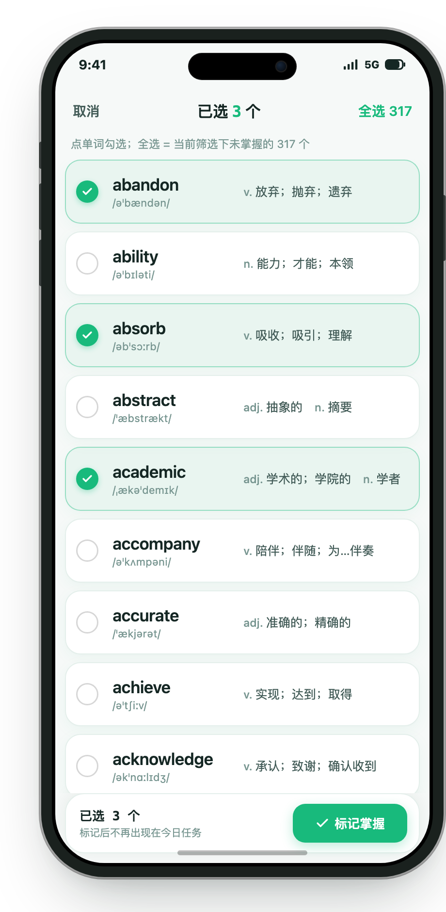

00结论
做多选模式：在词表页长按任意单词（或从「更多」菜单点「批量选择」）进入多选，勾选后底部操作条一次标记掌握；顶部「全选」把当前筛选下的全部未掌握词一次选中。
单个词的提速另有一处很小的改动：左滑面板是从右往左展开的，现在最贴边、手指一滑就落到的是「编辑」，「掌握」排在第三位。把「掌握」提到最靠边，左滑一下就正好在手指底下，语义完全不变，也不新增任何手势。
01现在为什么累
词表页每一行的「掌握」只存在于左滑出来的操作面板里（app/lib/page/word_list/word_list.dart:2261-2312）。要掌握 N 个词，就要 N 次「左滑 → 找准按钮 → 点」。这条路上没有任何"一次处理多个"的入口：
- 长按单词目前是打开单词详情页（app/lib/page/word_list/word_list.dart:2256），不能用来多选。
- 单词详情页里能看的只有单词本身，没有批量操作。
- 「状态筛选」只改变列表显示范围（app/lib/page/word_list/word_list.dart:4036），筛出来之后仍然要一个一个掌握。
每点一次「掌握」，客户端都要走一遍完整的单条写入（app/lib/db/dao.dart:2060 → app/lib/db/dao.dart:1943）：开一个事务、查一次是否已掌握、查一次当前最大序号、插一行词条、重算一次词书词数、重算一次用户已掌握数。其中重算用户已掌握数还会顺带跑段位判定与勋章判定（app/lib/db/dao.dart:2092-2121）。连点 100 个词，这套动作就重复 100 遍，量大时手机会明显发烫、卡顿，同步也要被触发 100 次。
02三种做法
| 做法 | 怎么用 | 优点 | 代价 |
|---|---|---|---|
| 多选模式 | 长按 / 菜单进入，勾选后底部条执行 | 批量、可精确控制、能全选 | 要新增一套选择态界面与批量写库 |
| 筛选结果一键掌握 | 筛出「未学习」后点一个按钮，整批标记 | 一次点击最快 | 没有"这批里这三个先留着"的余地；误点一次不可挽回 |
| 左滑按钮顺序调整 | 把「掌握」从第三位挪到最靠边 | 改动最小，不新增手势 | 仍然是一个一个，解决不了成批；想「编辑」的人要多滑一点 |
我建议把「筛选结果一键掌握」并进多选的全选：全选本身就是"当前筛选下所有未掌握的词一次选中"，效果一样，但用户在按下去之前亲眼看到选中了多少个，比一个来路不明的"一键"安全得多。
03推荐的交互

确认卡文案
标题：「将 N 个词标记为已掌握？」正文：「它们会立即进入「已掌握」词表，不再出现在今天的学习任务里；当天已开始的学习进度不会倒退。之后想重新背，需要到「已掌握」里逐个点「重学」。」
单个词的提速：左滑面板把「掌握」挪到最靠边
左滑面板由 flutter_slidable 提供（app/lib/page/word_list/modes/word_list_item_layout.dart:210），动作顺序固定。词书词表现在是「编辑 / 掌握 / 删除 / 详情」（app/lib/page/word_list/word_list.dart:2261-2378），最贴边、一滑就落在手指下的是「编辑」，而「掌握」排在第三位。把「掌握」提到第一位，想掌握时不用再"滑出来找一下"。只改顺序，不新增手势，也不改变任何动作的含义。
为什么不做「滑到底直接掌握」
考虑过让「掌握」滑到底松手即执行，但放弃了，有三个原因：
- 手势的含义对不上。左滑出来的是整排动作，滑到底等于"整行滑走"，用户无法从手势本身判断会执行「编辑」「掌握」还是「删除」。动作越多，这种不确定越大。
- 掌握不可撤销。见第 06 节：取消掌握 = 从零重学。把一个不可撤销的动作绑在一个含义模糊的手势上，误操作的代价太实在。
- 动作只会越来越多。词书词表现在已经有四个动作，将来再加「加入生词本」「查看词根」之类，滑到底的落点就更说不清。多选模式已经覆盖成批的场景，零星几个词多一次点击可以接受。
为什么底部条只有一颗按钮
「移出词表」不能放：各词表的"删除"根本不是一件事。词书词表是真的删掉词条（app/lib/page/word_list/dict_words.dart:233-247）；「学习中」「今日单词」「今日新词」「今日旧词」和批次词表的删除就是掌握（app/lib/page/word_list/learning_words.dart:40-42、app/lib/page/word_list/today_words.dart:38-40、app/lib/page/word_list/batch_words.dart:64-66）；错词与难词是移出错题本（app/lib/page/word_list/wrong_words.dart:45-55）；「已掌握」里则是重学。同一颗按钮在四个场景做四件事，还和「标记掌握」撞车，不能要。批量删除是另一个需求，要做也另开入口。
「加入生词本」也不能放：它不只是往生词本插一条，还会顺手把这个词从「已掌握」移出（app/lib/api/bo/word_bo.dart:1300-1308，注释里叫"退火重学"）。同一批词又掌握又进生词本，两个动作互相拆台。而且详情页已经有这个入口（app/lib/page/word_detail.dart:233）。
不新增的东西
- 不新增独立的「批量掌握」页面：批量操作发生在用户已经在看的那张词表上，选中谁、掌握谁，一眼能对上。
- 不做批量删除、批量加入生词本：语义在各词表里不统一，且与掌握互相干扰，见上一节。
- 不做撤销条：撤销若要无损，就得额外记住每个词原来的学习进度与批次位置，为一个低频操作加一套状态，不划算。用确认卡拦住误操作。
04实现要点
4.1 写库只开一次事务
新增一个批量方法（位置在 app/lib/db/dao.dart 的 MasteredWordsDao 里，紧挨现有 saveMasteredWord 与 setLearningWordAsMastered），一次事务里做完：
- 查一次「已掌握」词书 ID；查一次这批词里哪些已经在词书里，先减掉（重复点不会写出重复行）。
- 查一次当前最大序号，给剩下的词按顺序分配序号，批量插入词条（每行照旧生成一条同步日志）。
- 重算一次词书词数；重算一次用户已掌握数（段位与勋章判定因此只跑一次）。
- 按单条的同一规则处理学习进度：当天学习已开始时把这批词的今日环节数补满；还没开始时删掉它们规划中的学习记录。
整批要么全成功，要么整批回滚并报错。不允许出现"成功了一半、界面却显示全部成功"。
4.2 掌握规则不许另写一套
批量必须与单条完全同源。当前单条的规则写在 app/lib/db/dao.dart:2060-2088：进「已掌握」词书、当天已开始就补满今日环节、未开始就删学习记录。批量不能复制一份然后各改各的，应当把这段规则收成一个方法，单条与批量都调用它，批量只是把"一个词"换成"一批词"、把逐条查询换成批量查询。
4.3 全选的数量与范围
「全选 N」里的 N，取当前筛选条件下的未掌握词数，现成可用的是三态统计（app/lib/api/bo/word_bo.dart:2005）与按筛选取全部词 ID 的查询（app/lib/api/bo/word_bo.dart:1996 的 _getVisibleWordIdSet，本次改为公开方法供页面调用）。不能只取"已经加载出来的这一屏"：用户看到的 N 是 320，按下去就该是 320 个，而不是 30 个。
4.4 界面改动落点
- 选择状态与批量动作放在词表页的控制器里（app/lib/page/word_list/word_list_controller.dart，与现有
masterWord第 659 行并列）。 - 每行的左侧序号位增加"勾选圈"展示（app/lib/page/word_list/modes/word_list_item_layout.dart:221 的左侧列）。
- 顶部栏在多选态切换成「取消 / 已选 N 个 / 全选 N」（app/lib/page/word_list/word_list.dart:3342）。
- 长按进入多选（app/lib/page/word_list/word_list.dart:2256 的
_handleWordLongPress）；单词详情仍可从左滑面板的「详情」进入，能力不丢。 - 左滑动作顺序：把「掌握」的追加提到「编辑」之前，让它成为最靠边的一颗（app/lib/page/word_list/word_list.dart:2319-2438）。
- 底部主按钮按词表性质切换：「已掌握」页是「重学」（批量取消掌握），其余是「标记掌握」（app/lib/page/word_list/word_list_controller.dart 的
batchActionIsUnmaster）。 - 完成后刷新：今天计划页已经在监听掌握事件（app/lib/page/today_plan.dart:419），批量完成发一次事件即可，不必发 N 次。
05会影响到什么
| 地方 | 会怎样 |
|---|---|
| 今日任务 | 这批词从今天的学习与复习里消失；当天已开始的学习进度不倒退。今日计划页、首页书桌卡片即时刷新。 |
| 打卡 | 不会因为掌握而少算。当天已开始的词仍按"已走完环节"计入，与现在单条掌握一致。 |
| 段位与勋章 | 已掌握词数一次涨 N，可能当场跳段或点亮词汇勋章。这是正确结果，但要在完成提示里让用户知道「已掌握词数 +N」。 |
| 端云同步 | N 个词就是 N 条词条日志，一次同步上传。3000 个词约 600KB，远低于服务端 5MB 上限。 |
| 随身听 / 书签 | 批量掌握会让这批词从「学习中」类词表里消失，书签位置按现有规则前移，不需要额外处理。 |
06风险与不做的事
- 不做「一键掌握整本词书」的独立按钮：它就是全选，单独再做一个只是多一条误点路径。
- 不做撤销条与二次恢复：为一个低频操作引入一套历史状态，长期维护成本高于收益。
- 不做长按后的二级菜单：长按直接进多选并选中该词，一步到位。
- 不做「滑到底直接掌握」：滑到底的落点说不清是哪个动作，而掌握不可撤销，见第 03 节。
- 不做底部条上的「移出词表」「加入生词本」：前者在各词表里是四件不同的事，后者会把已掌握的词移出，见第 03 节。
- 暂不做「按学习状态批量掌握」（例如"把学习中全部标为掌握"）：筛选后全选已经能覆盖，且这种入口最容易被误点。
07验收清单
- 长按任意单词进入多选并选中该词；「更多 → 批量选择」也能进入。
- 勾选、取消勾选、全选、取消全选，顶部数量与底部数量始终一致。
- 「全选 N」的 N 等于当前筛选下的未掌握词数，不是已加载页数。
- 批量掌握后：这批词从当前列表消失，三态计数、标题词数、「已掌握」词书词数、个人页已掌握数四处一致。
- 当天学习已开始时批量掌握，打卡进度环不倒退；未开始时，规划中的学习记录被删除。
- 同一批词重复标记，不产生重复词条，已掌握数不重复增长。
- 批量过程中断网或写库失败，整批不落库、界面不显示成功，并给出错误提示。
- 左滑面板第一颗是「掌握」，一滑就落在手指下；其余动作顺序与含义不变。
- 底部操作条只有一颗主按钮，不出现删除、加入生词本；「已掌握」页这颗按钮是「重学」。
- 单元测试覆盖：批量去重、今日进度补满、未开始删记录、全选范围取全量。